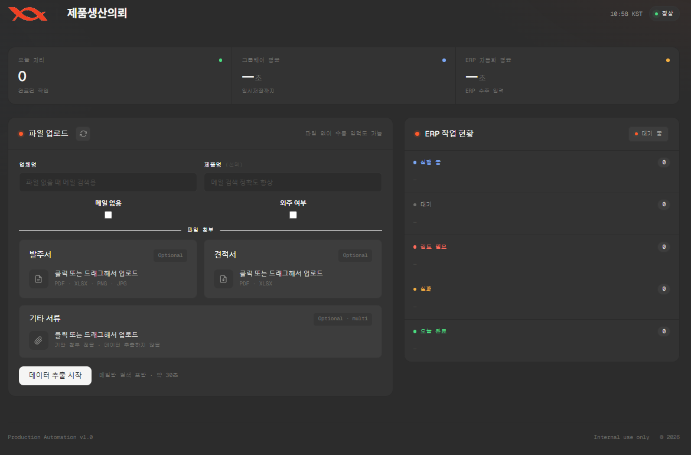

발주서·견적서 → AI 추출 → 생산의뢰서 → ERP 수주서
발주서·견적서 → 생산의뢰서 →
ERP 수주서 자동화
메일, 발주서, 견적서를 그룹웨어와 ERP 두 시스템에 일일이 옮겨 적던 수주 처리를
AI 추출과 브라우저·데스크톱 자동화로 자동화했습니다
요약
사람이 두 시스템에 옮겨 적던 수주 처리를,
업로드 한 번으로 끝낸다.
건당 처리 시간
8~10분
2분 30초
추출 내용 확인만 남기고
반복 입력 전부 자동화
주간 입력 실수
1~2건
0건
AI 추출 + 정규식 교차검증
+ readback 검증
동시 처리
2 시스템
그룹웨어 기안(브라우저)과
ERP 입력(데스크탑) 병렬 큐
01 · 문제 정의
수주 1건에 두 시스템 + 특이사항 4곳 수기
제품생산의뢰 한 건마다 그룹웨어 [제품생산의뢰서] 결재 상신과 ERP [수주서]를 함께 작성해야 했습니다.
01
두 시스템에 이중 입력
그룹웨어 [제품생산의뢰서] 결재 상신 + ERP [수주서]를 매 건 함께 작성
02
특이사항을 4곳에 수기
메일 특이사항을 전체·원료·자재 특이사항 + 결재의견에 일일이 나눠 기재
03
제목·결재선·긴급 수동
양식 복사→붙여넣기, 결재선 지정, 긴급 건은 제목 [긴급]+상신 시 긴급 체크
04
많을 땐 20건, 휴먼에러
건당 8~10분 × 하루 다수 → 수량·납기 오기, 특이사항 누락 등 실수 빈번
02 · 해결
파일 업로드 한 번 → 추출·기안·ERP까지
사람이 판단할 부분(추출 내용 확인)만 남기고, 읽기·계산·이중 입력을 전부 파이프라인으로 자동화했습니다.
① 발주서/견적서 수신
② AI 추출·교차검증
③ 수율 반영 수량 계산
④ Sheets 양식 생성
⑤ 그룹웨어 기안·상신
⑥ ERP 수주서 등록
핵심 관점
코드는 AI도 짠다 — 차이는 ‘무엇을 의심하고 검증했는가’
대부분을 AI 보조로 빠르게 구현했기에, 실제로 공을 들인 곳은 자동화가 ‘조용히 틀리지 않게’ 만드는 판단이었습니다.
검증을 의무화
“에러 없음 ≠ 성공”. ERP 입력은 readback, AI 추출은 정규식으로 매번 재확인
맥락으로 구분
같은 ‘제형’ 라벨도 어느 표에 속하냐로 판별 — 사후 필터가 아니라 소스 단계 차단
AI를 의심
환각·오독을 전제로 설계. AI는 추출 도구, 최종 판단은 규칙 기반 로직
보안을 기본값으로
관리자 권한 로컬 서버를 ‘localhost니까 안전’으로 두지 않고 다층 방어
사람을 루프에
추출 결과 확인 단계를 의도적으로 남겨 오류 폭주 방지 — 완전 자동화를 욕심내지 않음
실패를 설계
즉시 retry·ESC×3 중지·포커스 락으로 충돌과 실패 상황까지 대비
03 · 기능 ①
데이터 추출 — 발주서·견적서 + 메일까지
파일에서 핵심 데이터를 뽑고, 관련 메일을 직접 찾아 특이사항 단서까지 모읍니다. 추출은 AI, 검증은 규칙.
발주서·견적서 추출 (Gemini)
- 업체명·제품명·수량·단가·납기일 구조화 추출
- 이중 추출 — 텍스트 우선, 글자 분리 시 Vision OCR 폴백
- 수율 반영 생산요청수량 자동 계산
- 제품명을 ERP 정식 품목명칭으로 자동 교체
메일 자동 검색·분석 (Playwright)
- 그룹웨어 ‘제품생산의뢰’ 메일함을 스크래핑해 해당 건 메일 자동 검색
- 제품명 부분·순서(부분열) 매칭으로 내부 명칭 차이도 흡수
- 답장·전달 체인에서 최상단 발신자 본문만 분석
AI 지어내기 방지
텍스트·Vision 이중 추출 비교 · 정규식 패턴 교차검증 · 포장규격 기반 추론 대조 · mm 치수 등 생성값 제거 — AI는 추출, 최종 검증은 규칙이 담당.
04 · 기능 ②
메일 특이사항 자동 분류 — 한 번 읽고 4곳에 분배
메일 본문의 특이사항을 의미별로 나눠, 생산의뢰서의 각 칸과 결재의견·ERP 비고까지 자동으로 채웁니다.
전체 특이사항
생산·납품·포장·보관·품질 모든 요청 (원료·자재 포함, 중복 기재)
원료 특이사항
성분·배합·함량·공급처, 사급↔자사구매, 원료 소진만 분리
자재 특이사항
포장재·라벨·박스·파우치·캡슐쉘 등 부자재만 분리
🚨 긴급 자동 감지
메일에 “긴급” 키워드가 있으면 긴급으로 간주 → 결재 제목에 [긴급] 자동 추가 + 상신 시 긴급 옵션 체크
패킹단위 소진 → 수량 자동
“원료 600kg 소진(6,666세트)” 인식 → 발주수량=생산요청수량=6,666으로 자동 계산
ERP 비고 자동 압축
원료·자재 특이사항을 50자 이내로 압축 (원료코드·중량·사급/소진 보존)
05 · 기능 ③
제형 추출·정규화 — 맥락으로 오추출을 막다
제형(정제·캡슐·분말 등)은 거래처마다 표기가 다르고 자재 정보와 섞여 오추출되기 쉬워, 전용 정규화·검증 로직을 두었습니다.
정규화 / 검증
- 다중 시트 탐색 — 내부/외부/제출용 시트를 우선순위대로 수집
- 표기 정규화 — 800mg정제→정제, 연질 통합, 코팅 구분
- 치수 지어내기 차단 — mm 치수 붙은 제형은 문서에 없던 생성값으로 보고 제거
- 포장규격 기반 교차검증 — “PTP·50포”에서 제형 추론, 모순 시 제거
부자재 표 오추출 차단
한 시트에 “제형” 라벨이 세 군데(원가표·제품사양·부자재 표). 부자재 표의 값은 액상스틱(32mm) 같은 자재 치수라, 키-값 스캐너가 이를 제품 제형으로 잘못 집어왔습니다.
근본 해결
자재표 고유 컬럼(CUT(cm)·1롤폭(mm))으로 부자재 행을 식별 → 소스 단계에서 후보 제외. “같은 라벨도 맥락이 다르면 다른 데이터.”
06 · 기능 ④
그룹웨어 자동 기안 — Playwright
제품생산의뢰서 기안 작성부터 결재선 지정·상신까지, 브라우저 SPA를 사람처럼 조작합니다.
- 양식 HTML 자동 생성 후 기안 본문에 붙여넣기
- 담당자 매핑 테이블 기반 결재선 자동 구성
- 제목 자동 작성 — 긴급 시 [긴급], 외주 시 (전공정외주) 자동 표기
- 브라우저 로그인 상태를 저장·유지해 1회 로그인 후 계속 재사용
챌린지 — 상신 버튼이 안 눌림
결재상신 버튼은 클릭을 처리하는 코드가 겉으로 드러나 있지 않고 함수 안에 숨은 변수(클로저)에 묶여 있어, 자동화 도구로 어떤 방식의 클릭을 보내도 반응하지 않았습니다.
해결
버튼에 연결된 코드를 꺼내($._data) 분석한 뒤, 그 코드가 실제로 부르는 함수(validate→draftProc)를 브라우저 안에서 직접 실행해 우회.
07 · 기능 ⑤
ERP 수주서 입력 — pyautogui + Win32
API도 DB 접근도 없는 .NET WinForms ERP를, 사람처럼 GUI를 조작해 자동 입력합니다.
- 엑셀 같은 표 입력칸(fpSpread)을 복사·붙여넣기(Ctrl+C/V)로 간접 제어
- 매출유형·영업조직·품목·수량·단가·비고 자동 입력
- 매출처 검색 — 부분 매칭 + 결과 2건↑ 시 키보드로 정확한 행 선택
- 경고 팝업 자동 분류·대응, ESC×3 긴급 중지 안전장치
“에러 없음 ≠ 성공”
드롭다운은 유효하지 않은 값을 넣어도 에러 없이 조용히 무시(silent failure). API라면 4xx/5xx로 알지만 GUI는 알 수 없습니다.
원칙
모든 입력 후 값을 다시 읽어와 실제 반영을 검증, 실패 시 저장 전 자동 재시도. 유효값은 실제 입력 테스트로만 확정.
08 · 기능 ⑥
매핑 · 마스터 동기화 · 파일 자동 정리
자동화가 사람만큼 “알아서” 하려면, 주변 데이터와 파일까지 자동으로 맞춰져야 합니다.
담당자·거래처 매핑
- 업체명+제품명 → 담당부서·담당자 자동 매핑
- 업체명 → ERP 거래처코드 변환·별칭 처리
- 외주제품 → 외주처 자동 조회·기재
ERP 제품 마스터 동기화
- 매일 08:25 스케줄러로 제품 목록 자동 내보내기
- ERP 꺼져 있어도 자동 실행→로그인→조회→엑셀
- 정확일치→포함→퍼지매칭 3단계 스코어링
파일 자동 정리
- 실행 시 발주서·견적서를 공유 폴더에 자동 분류·복사
- 업체·팀별 {업체명}_{담당팀}/0. 발주서/
- 제품별 1. {제품명}/ 폴더로 분리
- 동일 파일명 존재 시 덮어쓰기 안 함 (중복 방지)
데이터 흐름
파일이 어떻게 엮이나 — 추출부터 매칭·산출까지
발주서·견적서·메일에서 뽑은 제품명·업체명을 4개 매칭 엔진이 사내 마스터와 대조해 코드·담당자로 확정하고, 한 결과를 Sheets·ERP·기안 세 곳에 재사용합니다.
① 추출
발주서·견적서·메일
📄 발주서 · 🧾 견적서excel_parser / gemini_extractor + vision_parser
✉️ 메일mail_scraper → mail_analyzer
cross_validator견적서 먼저 → PO↔QT 교차검증 → 메일로 확정
→ 제품명·업체명·수량·단가
→
② 매칭 엔진 ×4 — main.py · extract() 지휘
① 제품 매칭product_matcher.py
↕ erp_products.xlsx → 제품코드 5A
② 담당자·부서staff_mapper.lookup()
↕ 제품생산의뢰서_양식 → 부서·담당자
③ 거래처코드lookup_vendor_code → vendor_mapper
≥0.9 엄격 → 거래처코드
④ 외주 판별staff_mapper · 외주제품 탭
→ 외주처·생산구분
점수로 판별 — 정확일치 1.0 · 포함 0.7~0.9 · 퍼지 → 규격·채널·거래처 보정 → 최고점(≥0.7) 채택. 담당자는 업체 ≥0.7 + 제품 ≥0.5, 거래처코드 ≥0.9 엄격.
동일명 다채널(전유통/대리점)은 메일에 포함된 키워드를 감지해 구분 infer_channel_tag.
→
③ 산출물 ×3
한 결과를 세 곳에 재사용
🗂 Sheets DB + 양식sheets.py
🖥 ERP 수주서erp.py · best_match 재조회 → pyautogui
📝 그룹웨어 기안draft_submitter.py
09 · 아키텍처
아키텍처 — 세 작업을 동시에 병렬 처리
FastAPI 서버가 작업을 큐에 적재하고, 워커가 그룹웨어 기안·ERP 입력·파일 정리를 독립 큐로 동시에 처리합니다.
→
→
→
ERP 수주서 입력
pyautogui · Win32
↑ 세 작업 동시 처리 (포커스 락으로 충돌 방지)
FastAPI :8000 REST API · 작업 오케스트레이션
SQLite Queue 독립 큐 · 포커스 락 · 즉시 retry
무중단 운영 — PC 부팅 시 자동 시작 · 워치독(작업 스케줄러 1분 감시) + 배치 무한 루프로 서버가 죽어도(창 닫기·Ctrl+C 포함) 자동 재시작
10 · 운영 화면
웹 UI — 추출 결과 확인 후 한 번에 실행
사람은 추출 결과만 확인·수정하고 실행 버튼을 누릅니다. 큐에서 진행 상태를 실시간으로 봅니다.
웹 UI가 하는 일
- 발주서·견적서 드래그&드롭 업로드
- AI 추출 결과 확인·수정 (신뢰도 표시)
- 그룹웨어·ERP 작업을 큐에 등록
- 대기·진행·실패 상태 실시간 가시화
- 실패 작업 retry → 대기열 최우선 즉시 실행

🖥️
웹 UI · 큐 화면 캡처 영역
capture/webui.png 로 저장하면 자동 표시
생산의뢰 자동화 · 전체 데모 영상
⏩ 2배속 영상
11 · 기술적 챌린지
막힌 지점과 돌파구
ERP·그룹웨어 모두 API 없음
공식 API·DB 접근이 없는 두 시스템. 그룹웨어는 브라우저(Playwright), ERP는 엑셀 같은 표 입력칸(fpSpread)을 복사·붙여넣기로 간접 제어 — 드롭다운은 틀린 값도 조용히 무시돼, 넣은 뒤 다시 읽어 반영을 확인.
상신 버튼이 클릭으로 안 눌림
클릭 코드가 함수 안 숨은 변수(클로저)에 의존해 일반 클릭이 전부 실패 → 버튼에 연결된 코드를 꺼내 분석하고, 실제 함수를 브라우저 안에서 직접 실행.
비정형 발주서/견적서 파싱
거래처마다 양식이 다르고 PDF 텍스트가 깨짐 → 텍스트를 먼저 읽고, 깨지면 이미지 인식(Vision)으로 대신 처리하는 이중 전략, 결과는 형식 규칙(정규식)으로 재검증.
한 시트에 '제형'이 셋
제품 제형과 부자재 치수가 같은 라벨로 섞임 → 자재표 고유 컬럼으로 식별해 소스 단계에서 제외(맥락으로 구분).
12 · 보안 설계
관리자 권한 로컬 서버, “localhost니까 안전”에 안주하지 않음
각 방어를 “무슨 공격을 막는지” 기준으로 설계했습니다.
네트워크 · 접근 제어
- 외부 차단 127.0.0.1 바인딩
서버가 내 PC 안에서만 동작 — 바깥에선 접속 자체가 안 됨
- Host 검증 DNS rebinding 방어
악성 웹사이트가 내 브라우저를 시켜 로컬 서버를 치는 걸 차단
- CSRF 방어 Origin/Referer + 랜덤 토큰
다른 탭·확장이 내 자동화를 몰래 실행 못 하게 이중 잠금
- 공격 표면 축소 OpenAPI 끔
엔드포인트 목록 문서를 꺼 공격자에게 ‘지도’를 안 줌
파일 · 시크릿
- 파일명 정리 basename
../evil.exe 같은 경로 조작으로 폴더를 빠져나가는 걸 차단
- 업로드 제한
확장자(.pdf·.xlsx·이미지)와 크기(25MB)만 허용
- 경로 재확인 realpath
저장 경로가 업로드 폴더 안인지 한 번 더 검증(이중 안전장치)
- 시크릿 분리 .env
API키는 .env에서만(코드·깃 미포함)
13 · 최적화
성능·효율 최적화
같은 자동화라도 더 빠르고 안정적으로 — 병렬화·세션 재사용·사전 동기화·빠른 경로 우선.
병렬 큐 + 포커스 락
그룹웨어(브라우저)·ERP(데스크탑)를 독립 큐로 동시 처리, 포커스 충돌만 락으로 제어 → 순차 대비 처리량↑·입력 안정성 유지
세션 재사용
브라우저 로그인 상태를 저장·유지해 1회 로그인 후 계속 재사용 → 매 건 반복 로그인 제거
마스터 사전 동기화
ERP 제품목록을 매일 08:25 미리 내보내 캐시 → 매 건 ERP 조회 없이 즉시 품목 매칭
빠른 경로 우선 + 즉시 retry
텍스트 읽기(빠름) 우선, 깨질 때만 이미지 인식(Vision)으로 전환. 실패한 작업 재시도는 대기열 최우선으로 즉시 실행
14 · 성과 & 스택
성과 — 시간·오류를 동시에 줄였다
건당 처리 시간
8~10분
2분 30초
약 69% 단축
주간 입력 실수
1~2건
0건
오류율 100% 제거
데이터 정합성
100%
AI추출+정규식+재확인
3중 검증
기술 스택
Python · FastAPI · Gemini 2.5 Flash · Playwright · pyautogui/pywinauto/Win32 · Google Sheets API · openpyxl · SQLite
15 · 회고
배운 것, 그리고 다음
회고
- 에러 없음 ≠ 성공 — 화면 자동화의 적은 '조용한 실패'(입력이 무시돼도 에러가 안 남). 모든 입력을 다시 읽어 확인 의무화
- 코드에 적힌 값을 맹신하지 말 것 — 유효값은 실제로 넣어보고 다시 읽어 확인하는 테스트로만 확정
- AI 추출은 반드시 검증과 함께 — AI는 추출, 검증은 규칙
- API 없는 레거시도 자동화 가능 — 포커스·타이밍·팝업·검증을 체계적으로 설계하면 된다
다음 단계
ERP·그룹웨어에 API가 없어 Playwright·GUI 자동화로 풀었습니다. 추후 사내 API가 열리면 GUI 조작을 API 호출로 교체해 더 빠르고 안정적으로 만들 여지가 큽니다.